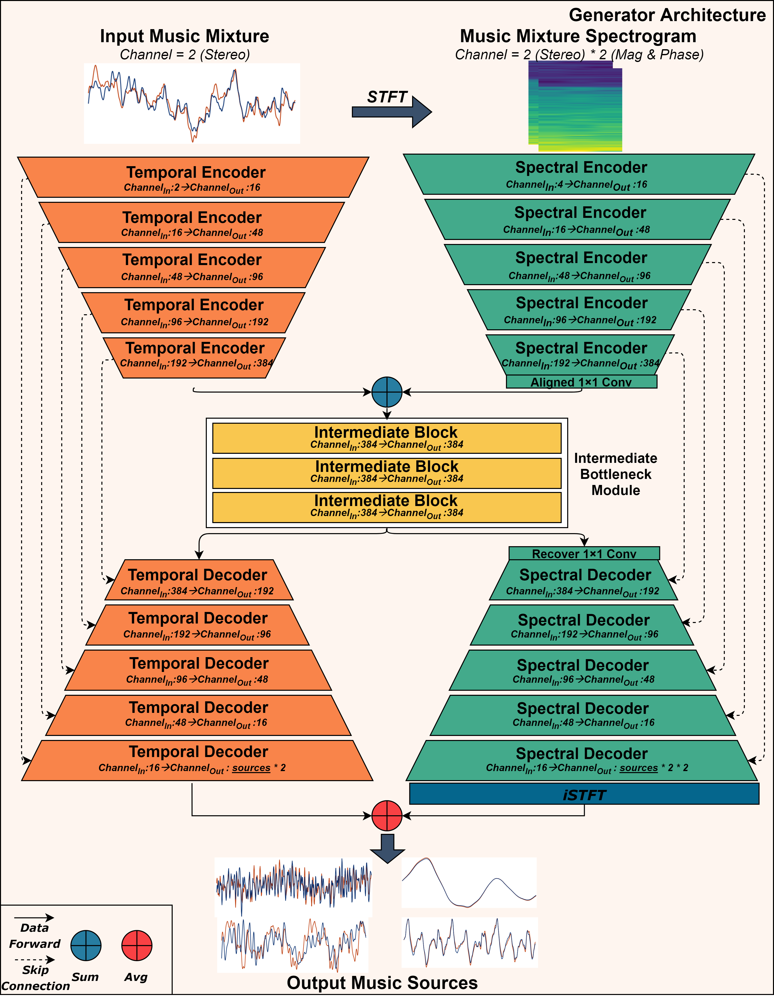
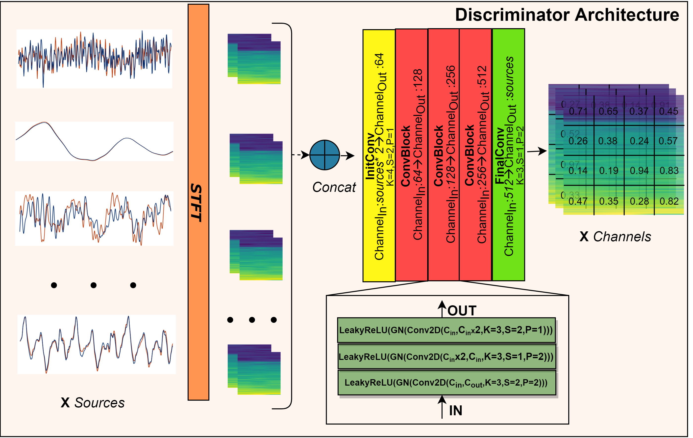

Music Source Separation via Hybrid Waveform and Spectrogram Generative Adversarial Network
A Demo Page
Music Source Separation via Hybrid Waveform and Spectrogram Generative Adversarial Network
Manuscript Submission
Abstract
Music source separation aims to disentangle individual sources from the mixture of musical signals. Existing generative adversarial network (GAN) based methods generally work on the spectrogram domain only. However, this practice ignores the
patterns from the waveform domain, which are more informative for modelling some categories of sources. In this paper, we propose a fully hybrid GAN framework to integrate knowledge from both domains. In particular, the generator formulates
acoustical patterns from waveform and spectrogram domains, while the discriminator provides discriminative information based on the local patch-level spectrograms such that the generator can produce more plausible separation results. Furthermore,
to enhance the quality of estimated sources, we devise a perceptual spectrogram loss term, which is a complement of the waveform-level loss. The experimental results on two widely used music source separation datasets demonstrate the superiority
of the proposed method compared with the state-of-the-art methods.


Audio Samples (MIR-1K)
The following clip is selected from the MIR-1K dataset:
The sample is from the test set according to our train/test split policy (please refer to our preprocess script for MIR-1K dataset).
The sample is also a hard one for all models.
Model\Source
Vocals
Accompaniments
GroundTruth
Wave-U-Net
Spleeter
Open-Unmix
Hybrid Demucs
Ours
Audio Samples (MUSDB18)
The following clip is selected from the MUSDB18 test set (Little Chicago's Finest - My Own):
Model\Source
Drums
Bass
Other
Vocals
GroundTruth
Wave-U-Net
Open-Unmix
Hybrid Demucs
Ours
Extra Samples
The following clips demonstrate the model's ability to perform music source separation on unseen samples:
The samples are to show the performance of the proposed method (under review), please do not use them for any other purposes.
Model\Source
Mixture
Drums
Bass
Other
Vocals
English
Chinese
Japanese
Korean
* All the clips in this demo are compressed.
* For the "bass" sources, we recommend you turning up the volume.